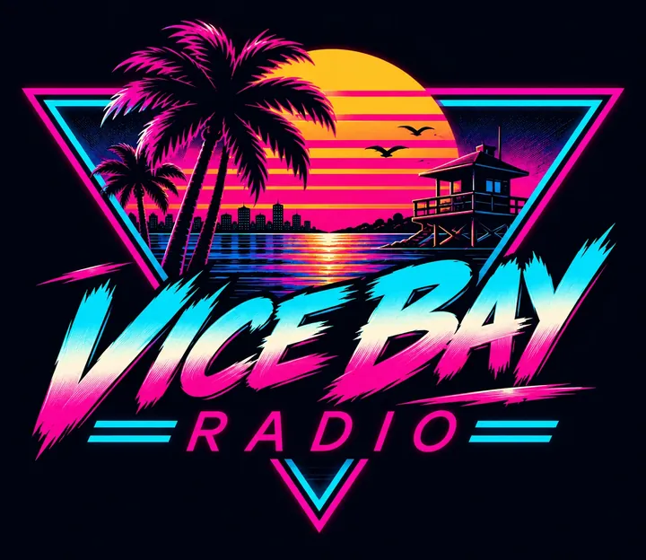

Vice Bay · 1986 · FM stéréo
Six stations.
Toute la nuit.
Les radios d'une ville qui n'existe pas. Des animateurs qui parlent trop, des jingles, et les pubs de tous les commerces du front de mer. Tourne le bouton.
VICE BAY ◆ FM STEREO RECEIVER
STEREORADIO COUPÉE
TUNING
—FM
VOLUME
Le cadran
Six stations, six nuits différentes
Chaque station a sa couleur, son quartier, son animateur et ses annonceurs. Musique 100 % libre, voix originales écrites pour Vice Bay.
Pages de pub
Les 25 commerces qui paient l'antenne
Garages des marais, fleuristes de nuit, motels d'autoroute : chaque commerce de Vice Bay a sa pub, lue par l'animateur de sa station. Aucun n'existe. Tous sont ouverts tard.
La ville
Bienvenue à Vice Bay
Une ville côtière de 1986, entre l'océan et les marais. Cinq quartiers, cinq couleurs, et une radio allumée dans chaque voiture.
Vice Bay Radio, partout
Le jeu, la communauté, le studio
🕹️
VICE BREAK
Le casse-briques néon de Vice Bay. 500 silhouettes, les six radios en fond. iPhone et Android.
Sortie le 19 novembre 2026
💬
Le Discord
Bugs, suggestions, bêta iOS/Android, coulisses de Vice Bay Radio. La radio y arrive bientôt en salon vocal.
Rejoindre le Discord →
 OKALAM Studio
Le studio indépendant derrière Vice Bay. Jeux, apps, et d'autres projets qui passeront par cette radio.
okalamstudio.com →
🧪
Les autres projets
Kotoba, VoteDay et ce qui arrive ensuite. Chaque projet du studio aura bientôt sa pub à l'antenne.
Voir les projets →
📸
Instagram
Artworks, enseignes et extraits d'antenne.
@okalamstudio.com →
📮
Presse & partenariats
Un commerce, une marque ou un projet qui veut passer sur Vice Bay Radio ? Écrivez-nous.
Nous contacter →
OKALAM Studio
Le studio indépendant derrière Vice Bay. Jeux, apps, et d'autres projets qui passeront par cette radio.
okalamstudio.com →
🧪
Les autres projets
Kotoba, VoteDay et ce qui arrive ensuite. Chaque projet du studio aura bientôt sa pub à l'antenne.
Voir les projets →
📸
Instagram
Artworks, enseignes et extraits d'antenne.
@okalamstudio.com →
📮
Presse & partenariats
Un commerce, une marque ou un projet qui veut passer sur Vice Bay Radio ? Écrivez-nous.
Nous contacter →
Bientôt à l'antenne
- Les pubs en audio, avec les voix des animateurs
- Le bot Vice Bay Radio dans le Discord, une station par salon
- L'appli gratuite Vice Bay Radio
Crédits